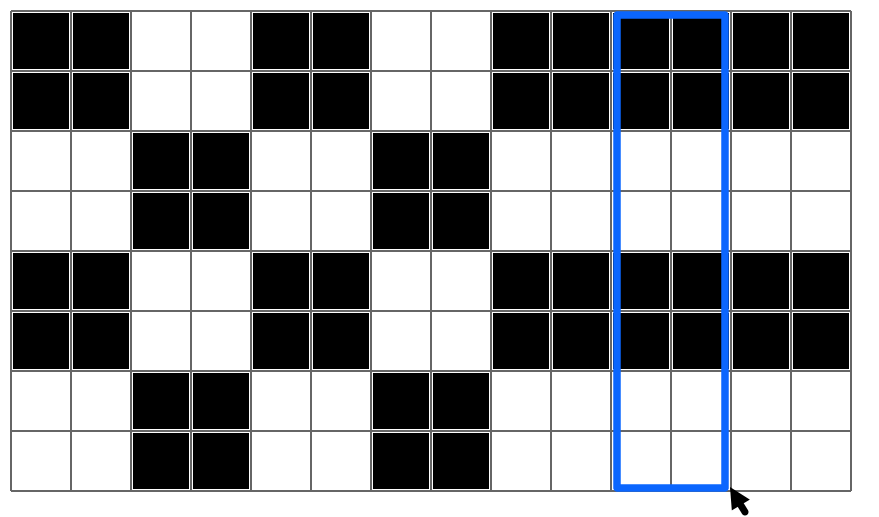
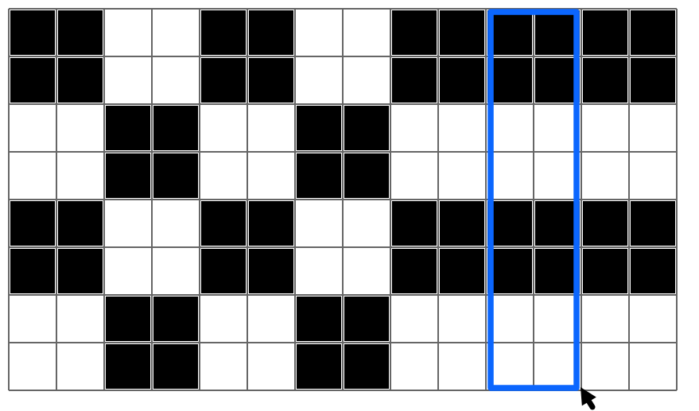

Måla rektanglar
Måla formen i "Mål"-rutnätet i "Din Figur"-rutnätet.
Du kan ändra färg (svart/vit) på cellerna i en rektangel genom att dra musen från ett hörn till det motsatta hörnet.
Den här versionen av uppgiften kan lösas på bara 2 steg.
Den här versionen av uppgiften kan lösas på 5 steg.
Den här versionen av uppgiften kan lösas på bara 4 steg.
| Mål: | ||
|
Din Figur: |
|


 
